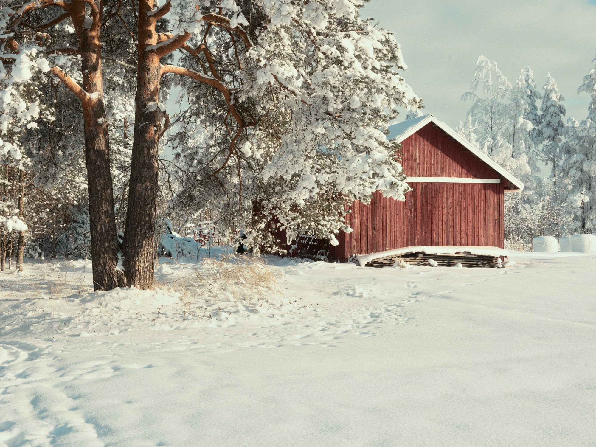
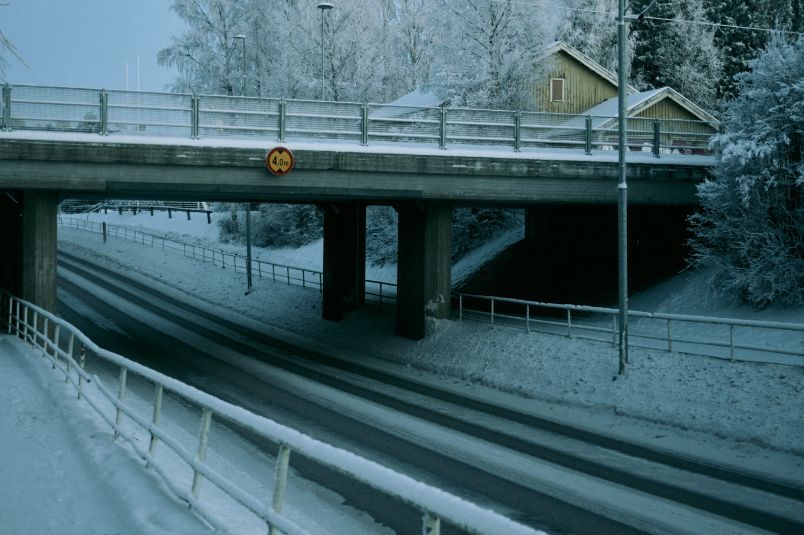

Nature / Luonto ja ympäristö
Whenever I venture near nature, my spirits are lifted. Nature remains one of my most vital sources of inspiration; it is a realm where one finds all manner of harmonious colors, shapes, sounds, and profound silence.
Aina kun menen lähellekään luontoa, mielialani kohoaa. Luonto on yksi tärkeimmistä inspiraation lähteistäni. Sieltähän löytyy vaikka minkälaisia harmonisia värejä ja muotoja, ääniä ja hiljaisuutta.

Hossa National Park / Hossan kansallispuisto
Suomussalmi, Finland 2025

Early Spring / Kevättalvi
Muhos, Finland 2026

Underpass / Alikulku
Ylivieska, Finland 2026